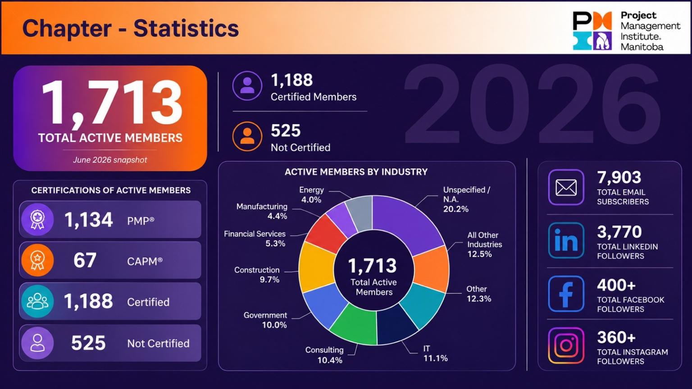
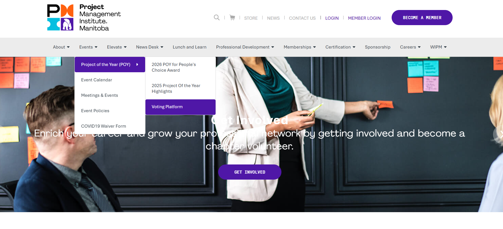

Data Analytics · Strategic Reporting
PMI Manitoba Membership & Engagement Analytics
Executive-level current-state analysis covering membership, certification, industry representation, and digital reach.
View Case Study →ECBA- and CAPM-certified business professional with experience in business analysis, application support, process improvement, UAT, reporting, and stakeholder engagement. This portfolio highlights selected projects, practical deliverables, and the business value behind the work.
Selected projects demonstrating business analysis, analytics, stakeholder collaboration, testing, and project delivery.

Executive-level current-state analysis covering membership, certification, industry representation, and digital reach.
View Case Study →
Translated stakeholder requirements into a member-gated voting workflow and validated the end-to-end experience.
View Case Study →Future projects can be added using the same problem → contribution → deliverable → value structure.
Requirements gathering, process analysis, use cases, user stories, acceptance criteria, UAT, and stakeholder engagement.
SDLC support, implementation readiness, status reporting, issue tracking, coordination, and delivery support.
Power BI, Excel, Power Query, ThoughtSpot, KPI dashboards, data validation, reconciliation, and executive reporting.
Enterprise application support, troubleshooting, workflow analysis, process improvement, documentation, and escalation.
A concise view of the experience behind the project work.
Investigate member and provider issues across enterprise systems, document findings, coordinate complex resolutions, and identify recurring service gaps.
Gather requirements, build KPI reporting, clean and reconcile data, support web and event initiatives, and validate changes through UAT.
Supported ERP/POS training readiness, UAT tracking, stakeholder reporting, and follow-up actions that helped achieve 98% training compliance before launch.
Supported digital banking applications, investigated access and transaction issues, documented cases, and escalated fraud or system concerns.
Provided front-line software, application, and hardware troubleshooting, documented solutions, and escalated complex support issues.
I am an ECBA- and CAPM-certified business professional with experience across business analysis, application support, data reporting, process improvement, UAT, and stakeholder collaboration. My background spans financial services, professional association initiatives, digital banking, technical support, and enterprise implementation support.
I enjoy taking an unclear business need, breaking it into requirements and workflows, validating the solution, and turning the outcome into something practical that stakeholders can use. This portfolio focuses on the work behind the deliverable: the problem, my role, the analysis, the testing, and the business value.
For a concise overview of my experience, education, certifications, and technical skills, view or download my current resume.
For professional opportunities, project discussions, or questions about the work shown in this portfolio, you can reach me directly by email or LinkedIn.